μManager for users
Install and start μManager
Instructions:
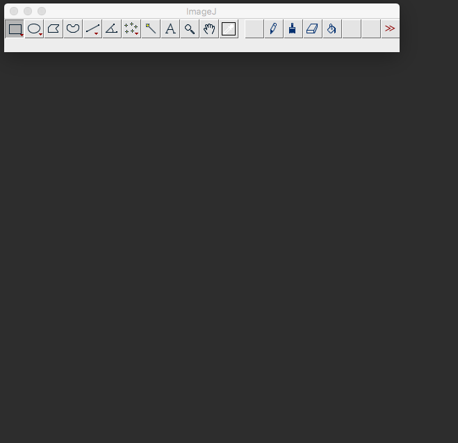
μManager is an ImageJ plugin. On startup, ImageJ loads a macro that starts μManager
Profiles are useful in multi-user environments. μManager will remember each user's choices and window positions.
The Hardware Configuration file is a text file that describes the hardware and hardware settings. Here, we use "virtual" hardware.
μManager Main Window
Left side of the window is always the same. Configuration settings on the right depend on hardware configuration.
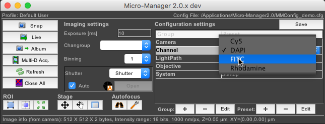
Configuration settings are often drop-down menus. They are tailored to your system by the system configurator and give quick access to useful hardware settings.
AutoShutter couples shutter opening/closing to camera activity. Uncheck for manual control of the shutter.
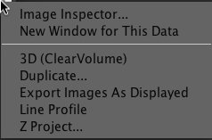
Experiment with live button, exposure time, Autostretch, ignore%, brightness/contrast, gamma (circle in middle of histogram).
Virtual joystick
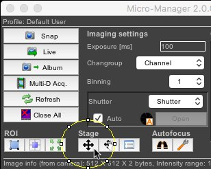
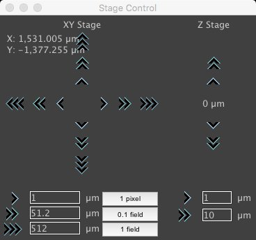
Multi-Dimensional Acquisition
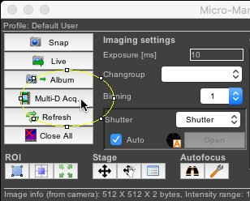
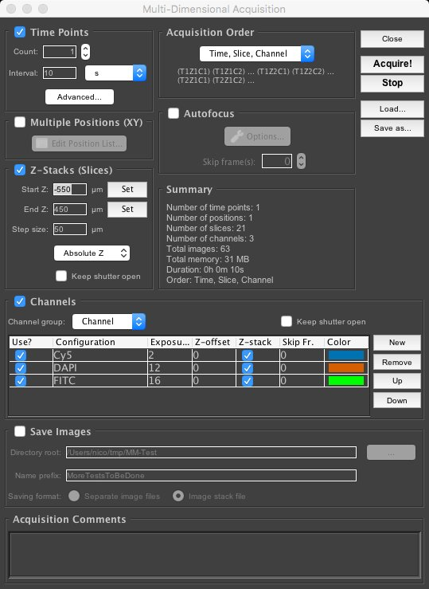
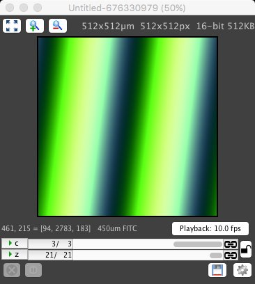
3D Viewer (ClearVolume)
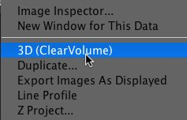
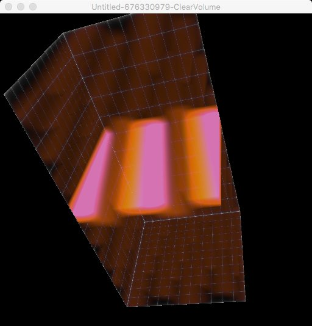

Change Device properties directly
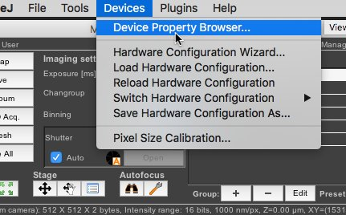
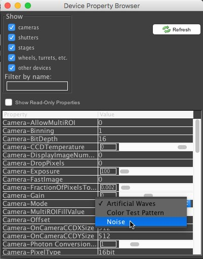
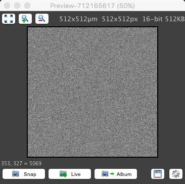
More?
User's guide (old, written for 1.4)